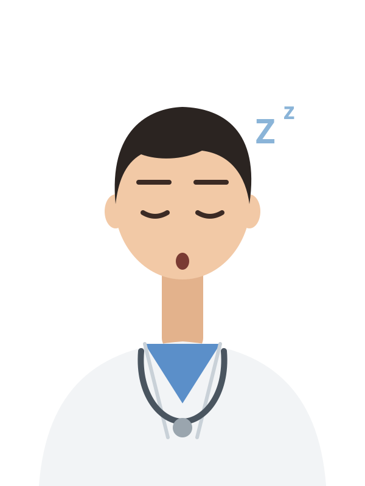
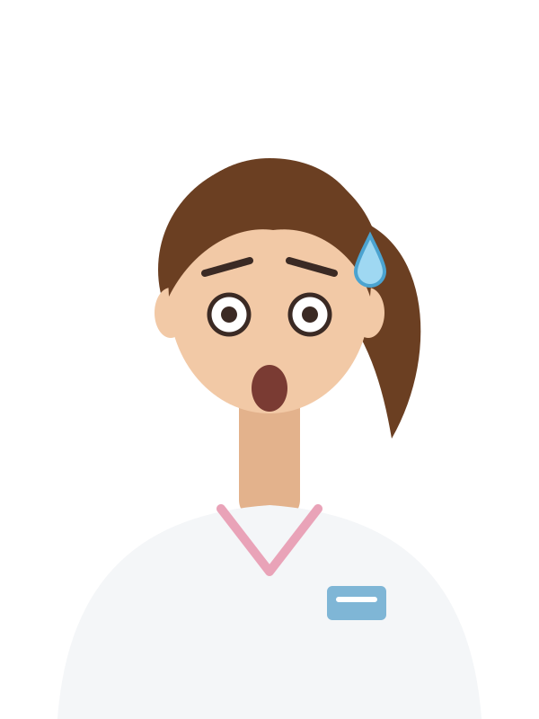

正在蓋聽力中心…

精力慢慢回來，時間也過得比較快。按 E 起床。
聽力中心 · 門診日08:00距離下班 9 小時 30 分
精力45%
肚子沒吃午餐
尿意62%
敏心100%
同事100%

邊吃邊回血。按 E 先不吃了。
✓ 0 / 3✗ 0 / 3耐心 100
聽力檢查儀VRA · 聲場 · 嗶嗶
✓ 0 / 5✗ 0 / 5耐心 100
聽力檢查儀遊戲式測聽 · 聲場 · 嗶嗶
第 1 / 3 次你是：推輪椅的人耐心 100
第 1 / 3 次門檻 0 / 3絆倒 0 / 2耐心 100
老伯慢慢往右走。在他快走近門檻時按「小心門檻」：太早他看不到，太晚他會被絆倒。
第 1 / 3 次拉扯擋路回血耐心 100
按住點滴袋，往右帶著病人走。不要太快（病人跟不上、管子被拉扯）、不要太慢（擋住動線），袋子要舉在綠色範圍內（太低會回血）。也可以用方向鍵。

照著紅色圓圈的節拍，按 C 或下面的按鈕壓胸。
每分鐘 100–120 下，每下壓深 5–6 公分、再讓胸口完全回彈。
先連續壓 30 下，中間不要停；接著護理師和急救小組會輪流接手，一直壓到 AED 分析或心跳回來。
0 / 30

護士
REPORT · 檢查報告
床
| 項目 | 結果 | 單位 | 參考值 |
|---|

電話響了

電話響了你午餐才吃到一半
扒兩口可以多回一點精力，但護士會等比較久。
設備故障
維修中……
維修的時候不能做別的事。
電話響了

17:30 · 下班
0今天被電話打斷（次）
資深聽力師的心聲
社畜體驗營．聽力師的一天
門診日，08:00 開診
你是今天的臨床聽力師，和另一位同事一起顧三間聽力室，從早上八點上到下午五點半。候診區的病人在等你，電話也會響：有的只是小事，有的需要你馬上處理。喝水、吃午餐、上廁所，都得自己找空檔。
- ↑↓←→
- 走路（按住 Shift 用跑的）
- E
- 看病人、接電話、吃點心、裝水喝、小憩、上廁所
- 123
- 在診間裡選你要做的事（也可以直接點）
- C
- 在茶水間飲水機旁沖咖啡
- M
- 全景：看整個聽力中心，再按一次回來
- P
- 暫停
選你今天的樣子：
遊戲僅供衛教與體驗，不能取代就醫與專業聽力檢查；耳朵突然聽不到、劇烈暈眩或其他緊急狀況，請立刻就醫或打 119。
開診
今天，聽力中心交給你了
門診時間 08:00 – 17:30。先看完上班準備事項，準備好再打卡。
08:00按下「上班打卡」，時間才會開始走

你
精力82%
肚子還沒吃午餐
尿意20%
上班準備事項
值班主管 → 你08:00 · 今天要注意的：
今天的跟診護士
怎麼玩
↑↓←→走路（Shift 跑）
E看病人、接電話、吃、喝、廁所
1 2 3診間選擇
C茶水間沖咖啡
M全景（看整個聽力中心）
B同事休息
P暫停
上班守則
- 記得照顧好自己：記得喝水、吃點心和午餐、上廁所。精力低於 20% 就跑不動，歸零會累倒，今天就結束了。
- 辦公室的電話會響：有的是小事，有的需要你過去。去看、電話交代，還是先不管，你決定。
- 候診區的病人會一邊等一邊失去耐心。讓他們等太久，情況會變糟，護士也會再打來。
- 檢查和處置可以在診間做選擇。選錯病人會變糟，錯太多可能錯過時機。
暫停中
時間停住了：病人不會失去耐心，電話也不會響。
按 P 或 Enter 也可以繼續